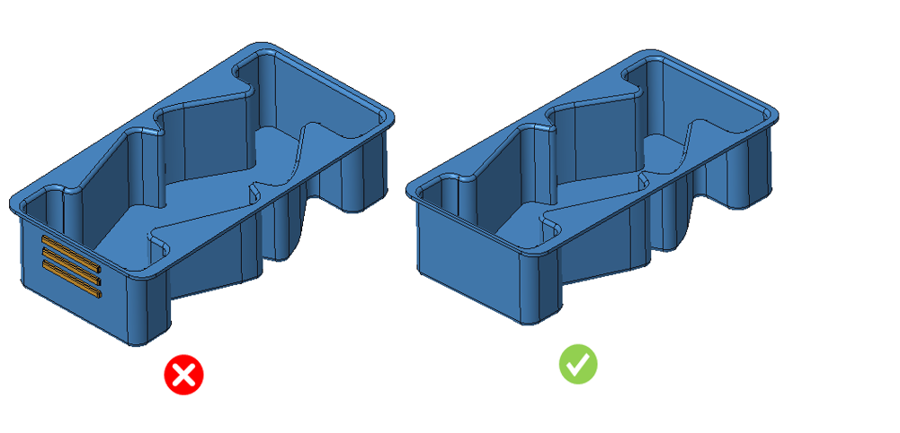

製造を容易にするため、アンダーカットは避けてください。
アンダーカットは、製造時に追加の工具や金型機構を必要とするため、避けるべきです。これには可動式または折りたたみ式の金型部材が必要になります。ただし、非常に小さなアンダーカットの場合は、金型を可動式または分割式にする必要がない場合もあります。材料特性によっては、一部の単純なアンダーカットはサイドコアを使用せずに金型から引き抜くことが可能です。
しかし、一般的な設計指針としては、機能上の要件がない限り、設計者はアンダーカット形状を避けるべきであるとされています。
部品におけるアンダーカットは、原則として避けるべきです。工夫された部品設計やわずかな設計変更によって、アンダーカットに対する複雑な機構を不要にできる場合が多くあります。

フィレットが大きな可視面を持ち、その面のごく一部（10%未満）のみがアンダーカットとして判定される場合、本ルールはその領域をアンダーカットとして検出しません。これは、実際の製造において、その程度の小さなアンダーカット面であればエジェクタピンを使用して離型でき、サイドアクションを必要としないためです。